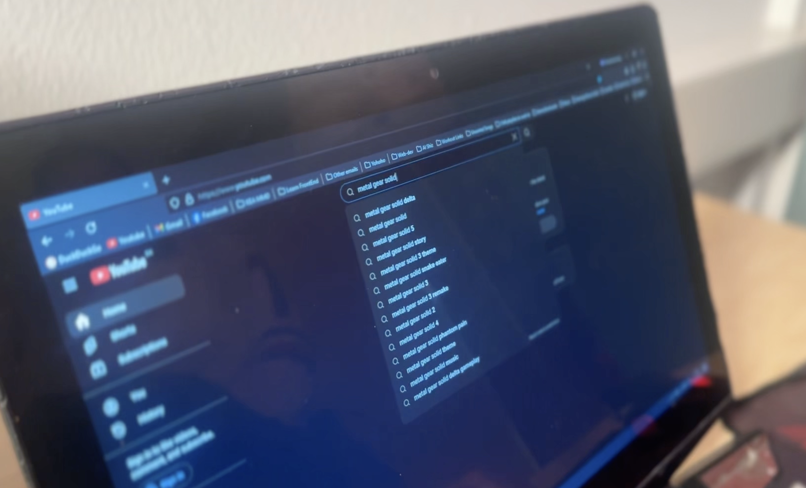
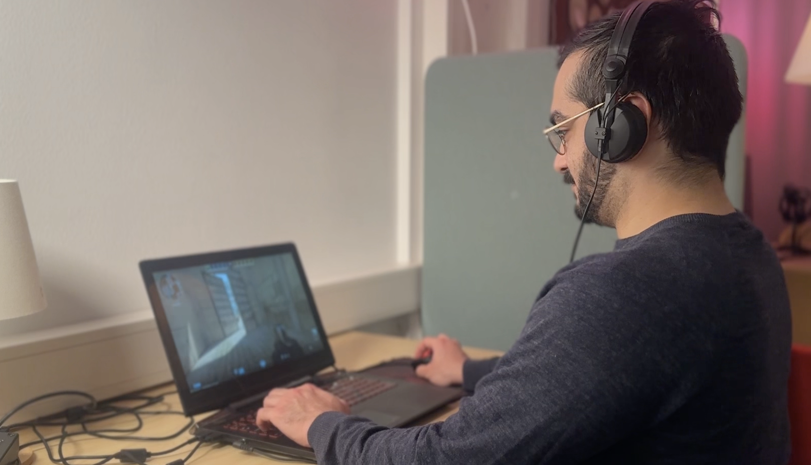

Bjørns passion: Gaming
Et site om computeren med alt fra dens historie til dens specifikationer og mine personlige præferencer, når det gælder computere og computerudstyr.
Om Spil som The Witcher
The Witcher er et af Bjørns yndlingsspil. Det er et episk rollespil, der tager spilleren med på et eventyr fyldt med mystik, magi og svære valg. Spillet er kendt for sin dybe historie, komplekse karakterer og fantastiske verden.
Hvis du elsker spil, der udfordrer din moral og giver dig mulighed for at udforske smukke landskaber, er The Witcher et must-play. Fra politiske intriger til monsterjagt, spillet har noget for enhver eventyrlysten sjæl.
Galleri


video